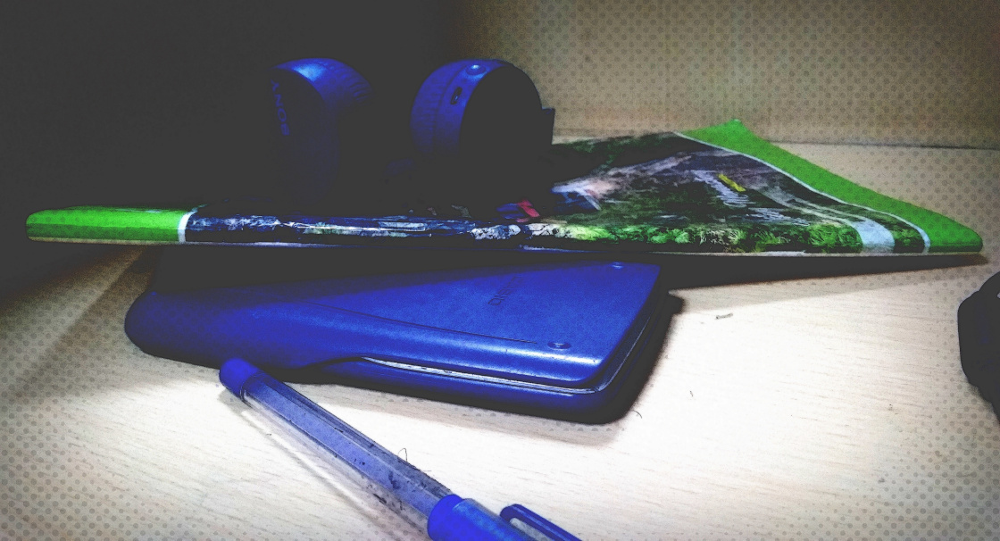

TECHNOPAIN
Explore the science behind everyday events.
SCIENCE IS NOT JUST A SUBJECT,
IT’S THE ESSENCE OF NATURE. IT’S THE HIDDEN ANSWERS IN THE OCEAN OF
QUESTIONS WHICH SEEMS TO BE UNDEFINED EVERYWHERE.
Hi Folks!
I am Shivam and glad to see you here. I am a design engineer with 3+ years of
work experience in technological projects and business marketing.
Science and mathematics are the two most prominent elements in my life,
and I keep wondering about how precisely they govern the dynamics of
this Universe.

I love to explore the Universe from the vision of scientific theories
and mathematical equations and try to correlate them to unveil the
cryptic mysteries of this Universe.
In most of my individual and group projects, I have worked as a
designer,programmer, and innovator.
I try to explore the possibilities and utility
of a particular product or device and look for its best applications to
create any beneficial entity.
A hectic life of engineering student has never isolated me from my passion
for writing. I have worked with new media and newspaper startups and helped
them create hundreds of superbly written and well-crafted contents for
their clients and visitors.
Apart from engineering and writing, I am well experienced with video editing,
presentations, animations, graphical designing, and Digital Marketing.
Moreover swimming and sporting is also a crucial part of my life.
Let's be Friends!?
Mates!?
Sounds fantastic to me… 😀
Want to do some out of the box discussion? Want to do some epic tech shit
or cool project which you have been dreaming from your sixth grade? Want
my help in any such thing? Or Do you have some challenge for me?
In that case, you are just one click away from all this! Till then, see you!
Have a nice day.
My Hobbies
- Cricket 🎾
- Basketball 🏀
- Writing 📃
- Singing 🎶
- Gaming 🎮
- Programming 💻
- Swimming 🏊